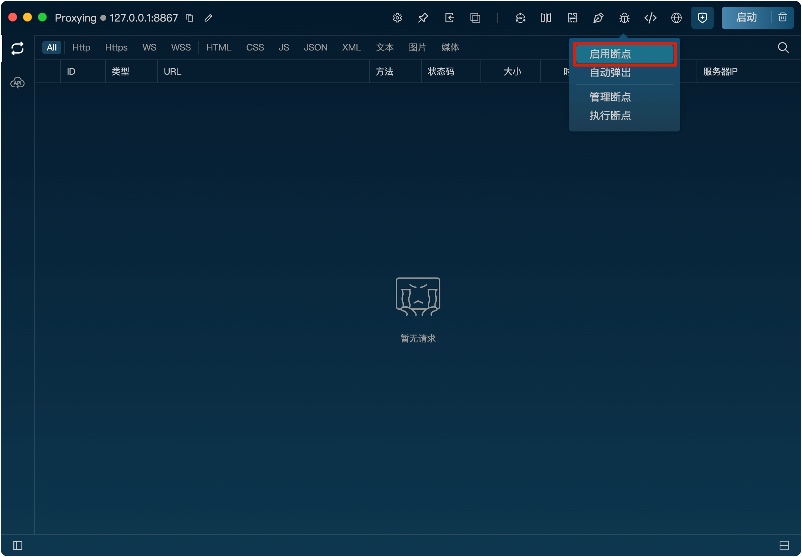
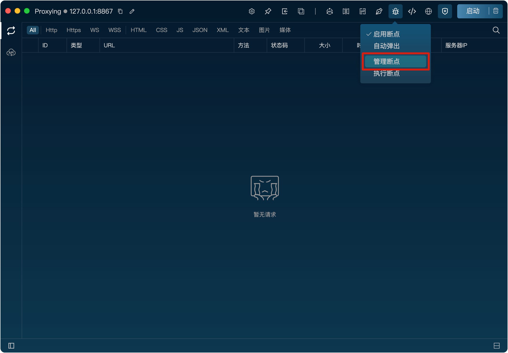
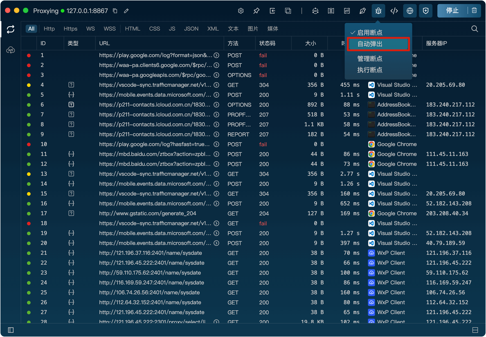

断点
功能
断点功能可以在请求发送到服务器之前或响应返回给客户端之前暂停请求，从而实现对请求和响应的手动检查和修改。
开启断点功能
将鼠标悬浮到断点图标上，点击“启动断点”按钮即可开启断点功能。

开启后，断点图标会高亮显示，表示断点已开启。
新增断点规则
1、将鼠标悬浮到断点图标上，点击“规则管理”按钮打开断点规则列表。

2、在规则列表弹框里，点击“+”按钮，打开新增规则弹窗。
3、在弹窗里，填写匹配规则、断点类型，点击“确定”按钮即可新增规则。匹配规则支持wildcard。
断点类型
断点类型可以选择请求断点或响应断点两种方式。
请求断点：
在请求发送到服务器之前暂停请求，允许用户检查和修改请求内容，然后手动继续请求发送到服务器。
响应断点：
在响应返回给客户端之前暂停响应，允许用户检查和修改响应内容，然后手动继续响应返回给客户端。
例：请求URL为“https://www.baidu.com/”，以下配置在浏览器发起请求后，浏览器会挂起等待。
此时打开Listen客户端，选择“执行断点”按钮，将会看到断点执行器中的列表里包含了该请求，点击该请求即可查看和修改请求内容，此时可以手动修改请求的方法、路径、参数、请求头、请求体，修改完成后点击“执行”按钮即可将请求发送到服务器，等待服务器响应返回后，浏览器会继续加载页面。
如果不想手动去打开执行器，可以在断点菜单里勾选“自动弹出”选项，这样当请求命中断点规则时，执行器会自动打开，方便用户查看和修改请求内容。 
响应断点的使用方法和请求断点一样，只不过是对服务器返回的响应内容进行检查和修改，修改完成后点击“执行”按钮即可将响应返回给客户端，浏览器会继续加载页面。
配置的时候可以同时勾选请求和响应，这样可以在请求发送前和响应返回前都进行检查和修改。